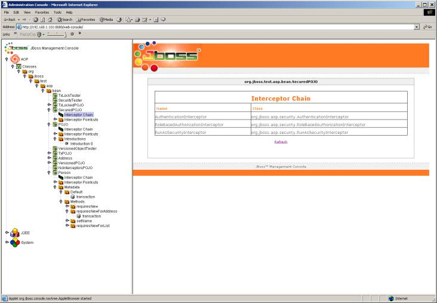

If you run AOP within the JBoss application server, you have access to our GUI management console that can show you a bunch of information about instrumented classes. You can access it at http://localhost:8080/web-console. In the AOP tree you can view all classes that have been loaded that pertain to AOP, what interceptors and advices that are attached, and also what metadata that has been attached. One particularly useful thing is the Unbounded Bindings folder. It specifys all bindings that are not bound. It allows you to debug when you might have a typo in one of your XML deployment descriptors.
If you are not running within the management console, you can get the same information in an XML dump from a switch on the precompiler. Use the -report switch if running it on the command line , or specify report=true in the ANT task.
